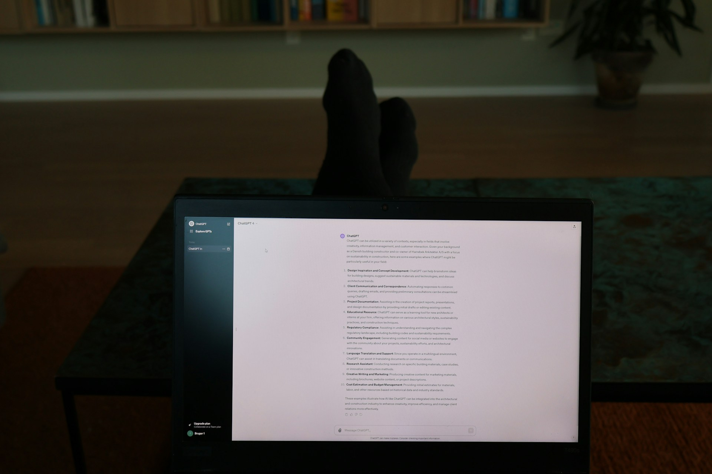

ChatGPT Login: Your Friendly Guide to Getting Started
So, you've heard all the buzz about ChatGPT and now you're ready to dive in and see what all the fuss is about. Whether you're looking to chat with an AI for fun, get some work done, or just satisfy your curiosity, you're in the right place. Logging in to ChatGPT is as easy as pie—if pie had a user manual. Don’t worry, we’re about to serve up a simple, step-by-step guide that’s so clear, even your grandma could follow it.
First Things First: What is ChatGPT?
Before we jump into the nitty-gritty of logging in, let’s make sure we’re all on the same page. ChatGPT is like that super-smart friend who knows a little bit about everything and is always ready to help. Developed by OpenAI, it’s a chatbot powered by artificial intelligence that can assist with writing, answer questions, generate ideas, and even crack a joke or two—though I’m still working on my punchlines.
Step 1: Finding the Login Page
The first step to chatting with ChatGPT is finding the login page. This might sound obvious, but it’s worth mentioning because, let’s face it, not all of us are tech wizards. So, open up your favorite web browser—Chrome, Firefox, Safari, whatever floats your boat—and type in chatgpt login into the search bar. Hit enter, and you’ll likely be greeted with a link to the official OpenAI website. That’s your golden ticket.
Alternatively, if you’re a fan of direct routes, just head straight to chat.openai.com. You’re welcome.
Step 2: Sign Up or Log In
Now that you’ve found the login page, it’s time to either sign up or log in. If you’re a first-timer, you’ll need to create an account. Don’t worry, this isn’t one of those drawn-out processes that makes you question your life choices. It’s quick and painless.
Creating an Account:
- Click on the “Sign Up” button.
- You’ll be asked to enter your email address or use your Google or Microsoft account for easy access.
- Create a password that’s secure but memorable—no need to get too clever with it. Something like “ILoveCats123” should do the trick (unless you’re more of a dog person).
Once you’ve filled in the necessary details, hit the “Sign Up” button, and voila! You’ve officially joined the ChatGPT club. Check your email for a confirmation message, click the link, and you’re all set.
Logging In:
If you’re already a member of the ChatGPT community, all you need to do is click on “Log In,” enter your email and password, and you’ll be chatting away in no time.
Step 3: Navigating the ChatGPT Interface
Once you’re logged in, you’ll be greeted by a clean and simple interface. It’s kind of like walking into a well-organized room—everything is where it should be, and you know exactly where to start. At the bottom of the screen, there’s a text box where you can type your message.
Pro tip: ChatGPT is all ears—well, metaphorically speaking. It’s ready to chat about anything you throw its way, whether it’s helping you draft an email, brainstorming ideas, or just passing the time with a friendly conversation.
Step 4: Getting the Most Out of ChatGPT
Now that you’re logged in, it’s time to have some fun and make the most out of ChatGPT. Here are a few tips to get you started:
- Be Clear and Specific: The more specific you are with your questions or requests, the better the response you’ll get. Instead of saying, “Tell me something interesting,” try asking, “What’s an interesting fact about space?” You’ll be amazed at how much ChatGPT knows about black holes and galaxies far, far away.
- Ask for Help: Whether you’re stuck on a work project, need ideas for a blog post, or want to craft the perfect text message, ChatGPT is like your personal assistant. Just type in what you need help with, and let the magic happen.
- Experiment with Creativity: ChatGPT isn’t just a fact machine. It’s got a creative side too. You can ask it to write a short story, come up with jokes, or even help you brainstorm names for your new pet hamster. The possibilities are endless.
- Use It for Learning: ChatGPT can be a great tool for learning new things. If you’re trying to understand a complex topic, like quantum physics (because why not?), ChatGPT can break it down into bite-sized chunks that are easy to digest. Just don’t ask it to do your homework for you—where’s the fun in that?
Step 5: Logging Out (Optional, but Recommended)
When you’re done with your session, it’s a good idea to log out, especially if you’re using a shared or public computer. To do this, simply click on your profile icon in the top right corner of the screen and select “Log Out.” This keeps your account safe and sound, just like locking the door when you leave the house.
Troubleshooting: When Things Go Awry
Occasionally, you might run into some hiccups while trying to log in. Don’t panic—this happens to the best of us. If you forget your password (happens to the best of us), just click on the “Forgot Password” link and follow the instructions to reset it. If you’re having trouble accessing the site, check your internet connection or try using a different browser.
If all else fails, there’s always the good old “turn it off and on again” trick. Close your browser, restart your device, and give it another go. If you’re still stuck, you can always reach out to OpenAI’s support team—they’re like the tech wizards behind the curtain.
Wrapping It Up
And there you have it—a simple, no-nonsense guide to logging in to ChatGPT. Whether you’re here to chat, learn, or just see what all the AI fuss is about, you’re now ready to get started. Remember, ChatGPT is here to help, and it’s just a login away.
So go ahead, dive in, and see where the conversation takes you. Just don’t forget to log out when you’re done—unless you want ChatGPT to keep itself company while you’re away.